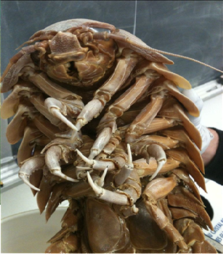

СЕМЕЙСТВА Cirolanidae.
ГЛУБИНА:от 170 до 2140 метров.
КОГДА ОТКРЫЛИ:было произведено франц. зоологом Альфонсом Мильном в 1879 году.
ТИП ПИТАНИЯ:детритофаги,питаются разлагающимися органическими веществами
Как правило, одиночки. Предпочитают тинистое или глинистое дно. Проявляют такое поведение, как зарывание в донные отложения, чтобы избежать хищников. Имеют сложные глаза, адаптированные к полной темноте.
В случае опасности сворачиваются в «шар», чтобы защитить мягкие ткани.
В 2024 году российские учёные с помощью глубоководных аппаратов «Мир» зафиксировали уникальное поведение: гигантские изоподы «дежурят» у трупов китов, постепенно поедая их в течение нескольких месяцев
У гигантских изоподов раздельный пол, оплодотворение происходит внутри.
Самки вынашивают оплодотворённые яйца в выводковом мешочке. Икринки крупные, а развитие детёнышей происходит относительно медленно по сравнению с другими морскими ракообразными.

наверх